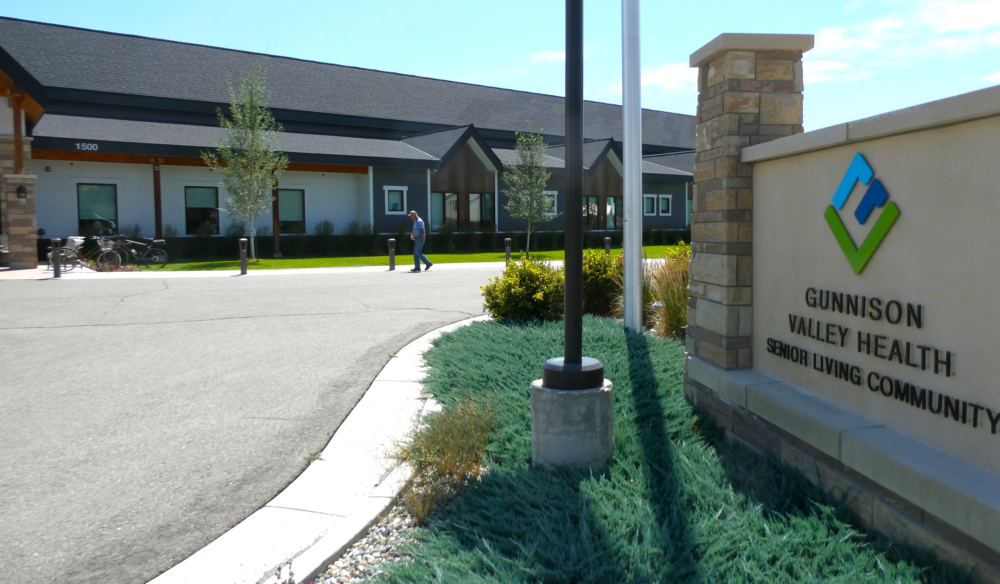
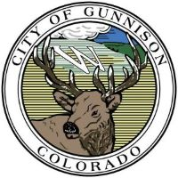
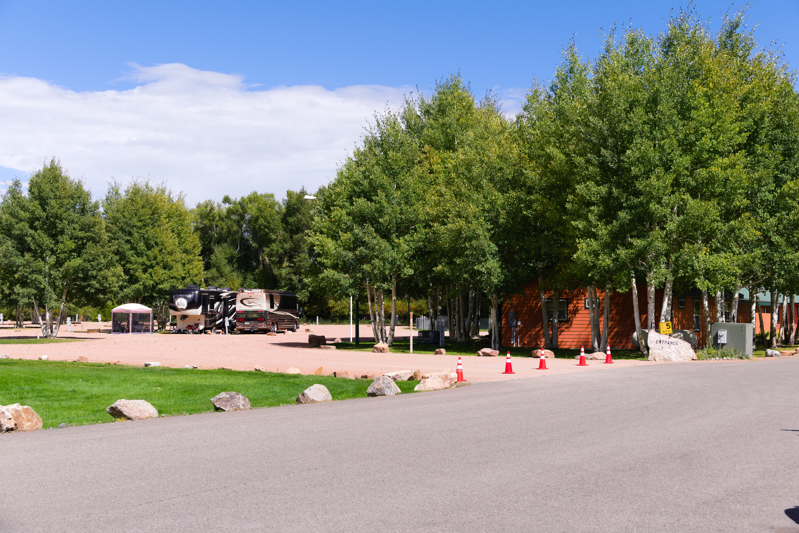

1972
Ben Jorgensen donated to the City of Gunnison 17 acres of land located in West Gunnison, near the Gunnison River and within sight of the spectacular rock formation known locally as the Palisades. The land was to be perpetually reserved for the exclusive use as a site for the construction and operation of a long-term care facility and appurtenant dwelling units for the elderly.


1973
Gunnison City Council appointed a five member committee to pursue the vision. The Gunnison Home Association was incorporated on April 23, 1973 and the Gunnison City Council transferred ownership of the land donated by Ben Jorgenson to the new organization.
1976
The completion of the 54-bed Health Care Center and on October 11, 1976 the first three residents were received
1981
In 1981 the ambience of the Center was greatly improved with the addition of the Iva Lehman Solarium, named for the person most responsible for raising the funds and getting the $96,000 addition built with no additional debt. This project was followed in 1986 when, in memory of Clarence Lehman, a workshop and storage facility was constructed, again without any additional debt.
1991
The third major project was the construction of a 4,200 square foot addition and major remodeling of important space in the original building. This project, dedicated on November 24, 1991, as the Mildred R. Brown Addition, was named in recognition of a major contribution which included still-producing oil wells in Oklahoma. Her funds were supplemented by donations from hundreds of other supporters. All three of these expansion projects were completed without additional debt.
1995
By the vote of Gunnison County citizens a 3.5 mill levy for tax support was passed for
the Nursing Homes operation. In turn, the Gunnison Home Association released to
Gunnison County the 5 acres of land around the Nursing Home with all physical assets
pertaining to it. ($3,000,000 value with $300,000 debt = 10% investment)
Following that transaction, the Gunnison Home Association was encouraged by the
Gunnison County Commissioners to keep the remaining 11+ acres and continue the development of senior amenities; offering support and assistance whenever possible.
2000
The Willows Assisted Living was built along with the development of 3rd Street,
surrounding roadways, curb & gutter, pavement and all necessary utilities for Phase 1. (At a $2,000,000 investment)


2007
The GHA began looking at opportunities to utilize the 8.6 acres on the north end of the property which is within the 100 year flood plain. The design and lay-out of the Park and the project management was provided at no cost by Don Crosby who was President of the GHA Board. The original construction included an office, a patio, roadways, utilities and landscaping for 60 sites for summer recreational vehicles. The spaces are for Seniors only. The Park opened in July of 2007 and a Grand Opening celebration was held in September 2007. Since the initial construction an extended covered patio, a garage, a gazebo and two dog parks have been added.
2007-2011
donations made by the GHA for the benefit of Seniors in our community included new automatic room doors and a new dining room floor at the Willows, an automatic door at the Richardson Hall Senior housing, funding for Senior medical needs transportation and a donation to the Food Pantry which is used by many Seniors in our community. A contribution to the Boomers Senior Group and a donation to Palliative Care totaled $36,500.00 for the benefit of Seniors in our valley.
2012-2015
The GHA contributed a total of $28,635.00 to projects at the Willows Assisted Living, the Volunteer Fire Department, Senior Scoops (newspaper calendar promoting Senior activities), and a contribution to the City of Gunnison for the Senior wing at the Gunnison Rec Center.
2015-2020
Camper nights, except for 2020, have continued to grow each year with our high count to date being 6,040 camper nights in 2019.
Efforts are on-going to provide handicap accessible independent living units for Seniors. Those units need to be close to public and private services. Construction of these units had originally been planned close to the existing facilities, but the construction of the new Health Care Center, and the continued use of the old Care Center has eliminated that possibility.
In 2020 the year began later than planned and we got off to a slow start due to COVID-19. The Park Managers and Camp Hosts worked very hard to plan activities that met all restriction and still provided the experiences our guests have come to enjoy and expect. Camper nights were down due to reservations that were cancelled, but our staff worked hard to fill the vacancies and allow short term guests to enjoy the beauty of the Park.
2020-2025
The first cycle of our new grant program was held in the last quarter of 2020. The GHA will continue the grant program, awarding money annually to organizations that provide services for Seniors. Organizations given money in 2021 for use in 2022 include the Willows, Hospice & Palliative Care, the Gunnison Food Pantry, Gunnison County Senior Resource Center, a fireplace for the senior area at the new Gunnison County Public Library, Six Points, and a handicap-accessible entry for the Gunnison Arts Center. Contributions in 2021 totaled $64,225.16
2022 – The grant cycle continued funding $52,050.00 of need in our community.
2023 – The regular grant cycle awarded $51,745.00 to be given in 2024.
In addition concerns were raised about the memory care wing at the Gunnison Health Care Center being closed and those residents being moved back into the general population. Board member Bill Knowles was particularly vocal about this need. Gunnison Valley Health asserted that it was closed due to staffing issues and low census at the Health Care Center. The hospital administration asked GHA for $250,000 to help complete work on their “campus”. At that time they were trying to complete remodeling the old Care Center into apartments for travelling nurses to help resolve staffing issues. The funding request was approved, but contingent on the opening of the Blue Mesa (memory care) wing.
2024 - The regular grant cycle contributed funding to Gunnison Senior Center Senior Meals, Gunnison Valley Heat, the Food Pantry, Gunnison Valley Animal Welfare League, the Willows, Six Points, Mountain Roots and Gunnison Valley Health Hospice. The grants awarded totaled $52,345.92 to services that benefit Seniors in 2025.